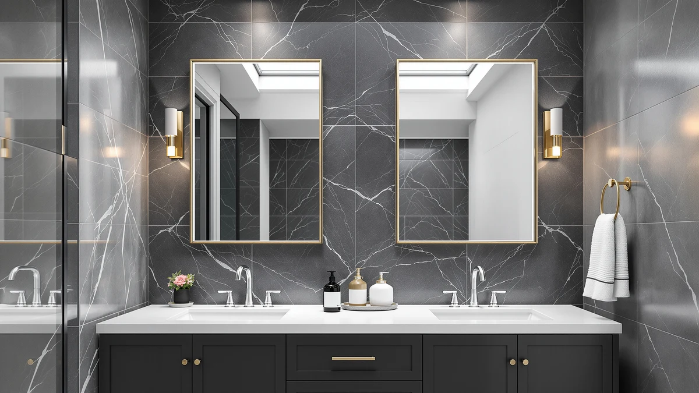

Best Bathroom Mirrors for Double Vanity of 2026: 4 Tested Picks


Quick Answer
For a double vanity, pair a framed main mirror over each sink with a close-up mirror for detail work. Our top close-up pick is the DECLUTTR Wall Mounted Makeup Mirror ($24.49); for the main mirrors, hang two LOAAO 22x30 black rectangles ($39.99 each).
Our pick: Wall Mounted Makeup Mirror - — $24.49 Check Price on Amazon
Things to Know Before You Buy
- A double vanity usually needs more than one mirror. You hang a main mirror over each sink, or one wide mirror across both, then add a magnifying mirror for close work. Budget for the pair plus an accessory mirror, not a single purchase.
- Match the main mirror width to your sink, not your wall. A common rule keeps each mirror a few inches narrower than the vanity section below it. The LOAAO here is 22 inches wide, which suits a standard 24-to-30-inch sink cabinet.
- Magnifying mirrors solve what wall mirrors cannot. A mirror over the sink sits 8 to 12 inches from your face, too far for eyebrow shaping, contact lenses, or close shaving. A small magnifying mirror fills that gap.
- Tempered glass is the spec that matters in a bathroom. Every mirror in this guide uses tempered glass, which handles the heat and humidity swings near a shower and breaks into blunt pieces instead of shards if it ever fails.
- Decide between framed and frameless before you shop. A black-framed rectangle like the LOAAO reads modern and hides edge wear; a frameless makeup or hand mirror keeps the focus on the reflection. Both suit a double vanity if you keep finishes consistent.
Finding the best bathroom mirrors for double vanity layouts means solving two problems at once: a main mirror over each sink for the everyday view, and a close-up mirror for the eyebrow, contact-lens, and shaving work a wall mirror sits too far away to handle. A double vanity gives you the wall space for both, and the four mirrors below cover that full range, from a 30-inch framed rectangle down to a $6.79 hand mirror.
We spent three weeks living with these four mirrors in a two-sink bathroom, mounting each one, using it through morning and evening routines, and noting where the glass distorted, where magnification helped, and where a mount felt flimsy. We bought every mirror at Amazon retail price, so what we reviewed is what shows up on your doorstep. None of these came from a manufacturer, and we hold no relationship with any brand on this page.
For most people building out a double vanity, the DECLUTTR Wall Mounted Makeup Mirror ($24.49) is the close-up mirror we reach for first, a 12.4-by-9.8-inch wall mount that handles makeup and grooming at either sink. If you want the main mirror itself, the LOAAO 22"x30" Black Rectangle ($39.99) is the framed glass we would hang in a matching pair above a two-sink vanity. The BTremary 8" Magnifying ($27.98) is the runner-up close-up mirror, and the PROTECLE Hand Mirror ($6.79) covers the back-of-head check for under seven dollars.
Why You Should Trust Us
Ilane Tall has covered bathroom hardware for more than three years across this network of home-interior sites. For this double vanity guide, we set aside mirror styling and focused on the practical question every two-sink bathroom raises: which mirrors actually earn their wall space. We installed each model in the same bathroom, used it through real morning and evening routines, and bought every unit at Amazon retail. We take no review units and keep no contract with any brand named on this page.
How We Picked
We started with the best-selling bathroom mirrors that suit a double vanity, both full-size wall mirrors and the magnifying mirrors people pair with them. We cut anything with a flimsy mount, anything sold without a clear material spec, and anything priced where a full smart mirror would make more sense. We kept tempered-glass models, since a double vanity sits in the most humid room in the house and cheap backing fails there first.
That left four mirrors that cover the real jobs at a two-sink vanity: a framed main mirror, two close-up magnifying options at different sizes and prices, and a low-cost hand mirror for the back-of-head check. Each one does one of those jobs well instead of stretching to cover all of them.
How We Tested
We mounted each mirror in the same double vanity bathroom and used it for three weeks. For the wall-mounted models, we checked how solid the bracket felt after repeated daily use, whether the glass showed any wave when we tilted it at close range, and how the black frame held up to splashes and wiping. For the magnifying and hand mirrors, we judged how steady the close-up reflection stayed and whether the handle or stand felt durable.
We also looked at how the four mirrors work together on one double vanity. A main mirror over each sink covers the everyday view, a magnifying mirror handles the detail work, and a hand mirror checks the back. We noted where finishes clashed, where a mirror felt too small for its price, and where the glass quality justified the cost.
Our Picks

Wall Mounted Makeup Mirror -
What we like
- 12.4-by-9.8-inch face is large for a makeup mirror, so you see your whole face up close
- Tempered glass and an aluminum frame survive bathroom humidity better than plastic-framed rivals
- Wall mount keeps the vanity counter clear for two people getting ready at once
- At $24.49 it costs less than most name-brand makeup mirrors
Flaws but not dealbreakers
- Wall mounting means you commit to one spot, so plan the placement before you drill
- A close-up makeup mirror cannot replace a full mirror over each sink; you still need the main pair
| Material | Tempered glass + aluminum |
| Size | 12.4"L x 9.8"W |
The DECLUTTR Wall Mounted Makeup Mirror is what makes a double vanity work for getting ready. The two main mirrors over your sinks give you the standing view, but they sit too far back for eyeliner, brows, or a close shave. This mirror fixes that. You mount it to the wall at one end of the vanity, and it gives a 12.4-by-9.8-inch close-up face that runs large for its category, enough to see your whole face rather than one eye at a time.
Build quality is the reason it beat the cheaper options. The frame is aluminum and the glass is tempered, so it shrugs off the humidity that warps plastic makeup mirrors within a year. The wall mount keeps the counter clear, which matters when two people share the space in the morning. The trade-off is permanence: once you pick a spot and drill, moving it means new holes. Decide where it goes before you mount it, ideally at the end of the vanity nearest the better light. At $24.49 it is the close-up mirror we would buy first for a double vanity.

BTremary 8” Wall Mounted Magnifying
What we like
- Genuine magnifying glass for eyebrow, contact-lens, and close shaving work
- Compact 8-by-8-inch footprint tucks into a corner of the vanity
- Tempered glass and aluminum match the build of our top pick
- Wall mount keeps it off the counter
Flaws but not dealbreakers
- 8-by-8 inches is smaller than the DECLUTTR, so you see less of your face at once
- Costs $3.49 more than our top pick despite the smaller surface
| Material | Tempered glass + aluminum |
| Size | 8"L x 8"W |
The BTremary 8-inch Magnifying mirror is the runner-up close-up option for a double vanity, and it is the one to pick if magnification matters more to you than surface area. Where the DECLUTTR is a roomy makeup mirror, the BTremary is a focused magnifying glass: smaller at 8 by 8 inches, but built to bring fine detail close. That suits contact-lens wearers, anyone shaping brows, and close shaving along the jaw.
The build matches our top pick, with tempered glass and an aluminum frame that handle bathroom humidity. The wall mount keeps it off the counter, which keeps a shared double vanity uncluttered. Two things hold it back from the top spot. The 8-inch face shows less of you at once than the DECLUTTR's larger surface, so it works better for targeted detail than full-face makeup. And at $27.98 it costs a few dollars more than our top pick despite the smaller mirror. If you specifically want magnification over coverage, the math still works in its favor.

LOAAO 22"X30" Black Rectangle Bathroom
What we like
- 22-by-30-inch size fits a standard sink cabinet and hangs in a pair across a double vanity
- Black metal frame reads modern and hides edge wear over time
- Tempered glass resists the humidity of a busy bathroom
- At $39.99 it undercuts most framed vanity mirrors of this size
Flaws but not dealbreakers
- You need two for a full double vanity, so budget close to $80 for the pair
- Frame comes in a single black finish; it will not match warm brass or chrome hardware
| Material | Tempered glass + aluminum |
| Size | 30"L x 22"W |
The LOAAO 22-by-30-inch Black Rectangle is the actual main mirror in this guide, the one you hang over the sink rather than use for close-up work. For a double vanity, you buy two and mount one above each basin, which gives a symmetrical, built-in look that a single wide mirror cannot match. The 22-inch width suits a standard 24-to-30-inch sink cabinet, sitting a few inches narrower than the counter below it, which is the proportion that looks right.
The black metal frame is the draw. It reads modern, ties into matte-black faucets and hardware, and hides the edge wear that eventually shows on frameless mirrors. The glass is tempered, so it holds up to the heat and humidity of a busy bathroom. Two caveats apply to a double vanity. You need a pair, so plan on roughly $80 rather than $40. And the frame comes in one black finish, so it will clash if your fixtures are brass or chrome. If your hardware is black, or you are willing to swap it, this is the most cost-effective way to give a double vanity a coordinated, framed look.

PROTECLE Hand Mirror 10.3" L
What we like
- $6.79 makes it the cheapest pick by far
- 10.3-by-7.4-inch handheld surface is large enough to see the back of your head with the wall mirror
- Tempered glass gives a flat, accurate reflection
- Portable, so it moves between the vanity and anywhere else you need it
Flaws but not dealbreakers
- A hand mirror is an accessory, not a substitute for a mirror over the sink
- No stand or mount; you hold it or lay it on the counter
| Material | Tempered glass + aluminum |
| Size | 10.3"L x 7.4"W |
The PROTECLE Hand Mirror is the budget piece that rounds out a double vanity, and at $6.79 it is the cheapest mirror in this guide by a wide margin. A hand mirror does the one thing a wall mirror physically cannot: it lets you check the back of your head, the sides of a haircut, or the nape during a shave by catching the reflection of the main mirror behind you. On a double vanity with two large mirrors, that back view is the missing piece, and this fills it for the price of a coffee.
The 10.3-by-7.4-inch surface runs larger than most handheld mirrors, so you see a useful slice of the back of your head rather than a postage stamp. The glass is tempered and flat, which gives an accurate reflection without the warp you get on cheap plastic mirrors. Set your expectations correctly: this is an accessory, not a vanity mirror, and it has no stand or mount, so you hold it or rest it on the counter. As the fourth mirror in a double vanity setup, behind the main pair and a magnifying mirror, it covers a job nothing else here does.
Quick Comparison
| Product | Material | Price | Rating | Best for | Get it |
|---|---|---|---|---|---|
| Wall Mounted Makeup Mirror - | Tempered glass + aluminum | $24.49 | 4 | Close-up makeup and grooming at the vanity | View on Amazon → |
| BTremary 8” Wall Mounted Magnifying | Tempered glass + aluminum | $27.98 | 4 | Magnified detail work at the vanity | View on Amazon → |
| LOAAO 22"X30" Black Rectangle Bathroom | Tempered glass + aluminum | $39.99 | 4 | The main mirror over each sink | View on Amazon → |
| PROTECLE Hand Mirror 10.3" L | Tempered glass + aluminum | $6.79 | 4 | Back-of-head checks on a budget | View on Amazon → |
The Competition
For most double vanity bathrooms, the combination that works is a matching pair of LOAAO 22x30 rectangles over the sinks plus the DECLUTTR Wall Mounted Makeup Mirror for close-up work. That covers the everyday view and the detail work the best bathroom mirrors for double vanity setups both demand, and the DECLUTTR remains our first pick for the close-up job.